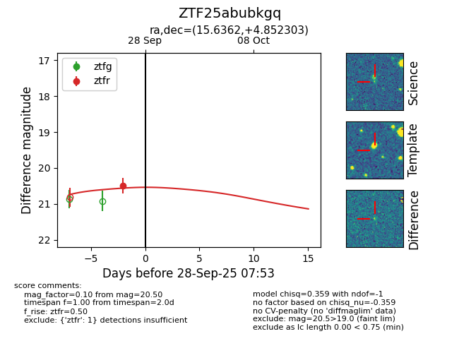
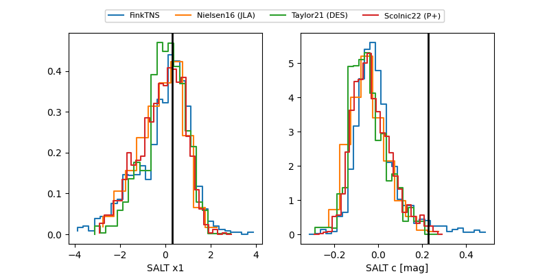

FINK: ZTF25abubkgq
Lasair: ZTF25abubkgq
ALeRCE: ZTF25abubkgq
ZTF25abubkgq (ztf,fink)
equatorial (ra, dec) = (15.6362,+4.85230)
galactic (l, b) = (128.1447,-57.90698)


last ztfr=20.50
1 ztfr detections